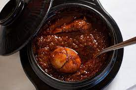

Doro Wot

Description
Doro Wat is one of the most famous of all African dishes.
You will find it in every Ethiopian restaurant and virtually
anyone who is familiar with African cuisine will have heard of it
Traditionally Doro Wat is served with an Ethiopian flatbread
called injera. It's kind of a spongy pancake made with teff
flour (a grain indigenous to the area), and the batter is left
to ferment for up to 4 days before its used. The injera is
used in place of an eating utensil and is used to scoop up
the chicken stew.
The key to authentic, great-tasting Doro Wat is good quality,
flavorful berbere, and a very long cooking process.
It can take several hours for an Ethiopian to make Doro Wat.
You can cut back on the cooking time and your Doro Wat will
still taste good, but it won't taste like it's supposed to.
The magic is in the slow-cooked onions. And it takes time
for the magic to happen.
Ingredients
- 3 lbs chicken thighs
- 2 tablespoons fresh lemon juice
- 2 tablespoons niter kibbeh
- 2 tablespoons extra virgin olive oil
- 3 cups yellow onions finely minced
- 1 tablespoon finely minced garlic
- 1 tablespoon finely minced ginger
- 1/4 cup Ethiopian berbere
- 1 1/2 teaspoons salt
- 4 hard-boiled eggs
- 1 cup chicken stock
Instructions
- Place the chicken pieces in a bowl and pour lemon
juice over. Let sit at room temperature for at least
30 minutes.
- Heat the niter kibbeh or butter along with the olive
oil in a Dutch oven. Add the onions and saute,
covered, over low heat for 45 minutes, stirring
occasionally.
- Add the berbere and the 2 remaining tablespoons
of butter and saute, covered, over low heat
for another 30 minutes, stirring occasionally.
- Add the garlic, ginger, and 1 tablespoon butter
and continue to saute, covered, for another 20
minutes, stirring occasionally.
- Add the chicken, broth, salt and wine and bring
to a boil. Reduce the heat to low, cover, and
simmer for 45 minutes, stirring occasionally.
- Adjust the seasonings, adding more berbere
according to heat preference. Add the boiled eggs
and simmer on low heat, covered, for another 15
minutes.
- Half or quarter the eggs and arrange on the plates
with the stew. Serve hot with injera, bread or rice